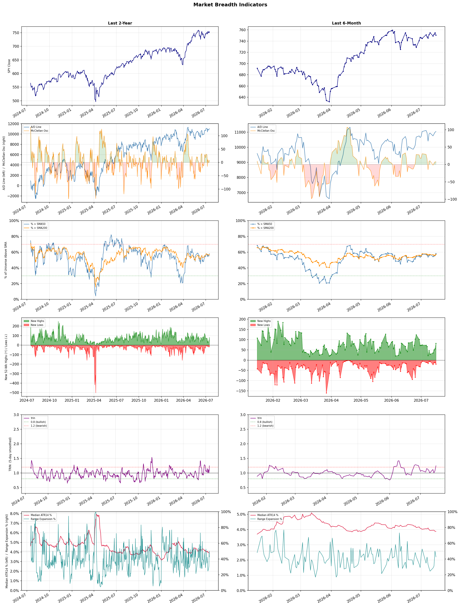

A daily market breadth and sector rotation report for active investors
| Item | Read |
|---|---|
| Regime | Selective Risk-On |
| Risk posture | Selective |
| Universe | 1,339 stocks tracked · 82 new 52-week highs · 30 active swing setups |
| Breadth | 58.2% of tracked stocks are above SMA50 — neutral range, new highs exceed new lows (82 vs 20) |
| Leadership | Oil & Gas Refining & Marketing, Diagnostics & Research, and Medical Care Facilities |
| Weakest groups | Uranium, Other Industrial Metals & Mining, and Gold |
Use this report to prioritize research and chart review; validate entries, stops, liquidity, earnings, and risk before acting.
| Item | Read |
|---|---|
| Primary read | Selective Risk-On regime with Selective risk posture. |
| Research queue | PBF, DINO, MPC, VLO, UGP |
| Leadership focus | Oil & Gas Refining & Marketing, Diagnostics & Research, and Medical Care Facilities |
| Caution list | Uranium, Other Industrial Metals & Mining, and Gold |
| Review prompt | Check extension risk, chart location, fundamentals, valuation, and earnings before using any research row. |
| Item | Read |
|---|---|
| Primary read | 1 active risk warnings; use screen output as watchlist input only. |
| Bullish screens | DINO, UGP, ACHC, CUZ, HIW |
| Bearish screens | MRLN, ORLA, SLI |
| Alerts / levels | Automated trigger, stop, ATR, liquidity, reward/risk, and event-risk levels are pending future enrichment. |
| Review prompt | Open the linked chart, define trigger and invalidation, then check liquidity and event risk independently. |
Risk Posture: Selective — screen backdrop supports selective research in leading industries
Metric context: McClellan below -50 = elevated selling pressure; below -100 = washout territory. Range Expansion = share of stocks with daily range above their 20-day average. Signal Density = share of tracked names appearing in signal screens.
| Breadth Date | % > SMA50 | % > SMA200 | New Highs | New Lows | McClellan | Median Range | Avg Range | Median ATR14 | Range Expansion | Signal Density |
|---|---|---|---|---|---|---|---|---|---|---|
| 2026-07-16 | 58.2% | 57.1% | 82 | 20 | 7.7 | 3.5% | 4.2% | 3.9% | 42.7% | 2.6% |

Prior comparison date: July 15, 2026
| Metric | Prior | Current | Change |
|---|---|---|---|
| Regime | Selective Risk-On | Selective Risk-On | unchanged |
| Risk Posture | Selective | Selective | unchanged |
| % > SMA50 | 55.8% | 58.2% | +2.3 pts |
| % > SMA200 | 56.4% | 57.1% | +0.7 pts |
| New Highs | 56 | 82 | +26 |
| New Lows | 10 | 20 | -10 |
Top-10 industries entering: Insurance - Life and Insurance - Property & Casualty. Top-10 industries leaving: Healthcare Plans and REIT - Hotel & Motel. New multi-signal long setups: ACHC, AMRX, ASB, BANC, CROX, DOC, HIW, MTCH, NNN. New multi-signal short setups: ORLA.
| Status | Tickers | Read |
|---|---|---|
| Added | ACHC, AMRX, ASB, BANC, CROX, DHR, DOC, HIW | New technical screen matches vs prior report. |
| Removed | AGNC, ALHC, BNS, BNY, CALY, DX, ELVN, ETSY | No longer present in today's technical screen matches. |
| Still Active | ABCL, COLB, CUZ, DINO, GNW, MFC, MRLN, MRVI | Appeared in both current and prior reports. |
| Promoted | none | Model Screen Score improved by at least 15 points. |
| Downgraded | none | Model Screen Score declined by at least 15 points. |
| Direction | Industry | ETF | Prior Rank | Current Rank | Days | Rank Change |
|---|---|---|---|---|---|---|
| Rose | Oil & Gas Refining & Marketing | CRAK | 84 | 1 | 28 | +83 |
| Rose | Household & Personal Products | XLP | 98 | 17 | 42 | +81 |
| Rose | Insurance - Property & Casualty | KIE | 84 | 10 | 42 | +74 |
| Rose | Insurance Brokers | N/A | 85 | 12 | 28 | +73 |
| Rose | REIT - Healthcare Facilities | XLRE | 76 | 11 | 35 | +65 |
Bull: The Oil & Gas Refining & Marketing sector is experiencing a rise in relative strength due to a combination of favorable market conditions and positive sentiment surrounding geopolitical stability, as indicated by the headlines discussing hopes of Middle East de-escalation. This optimism has led to a surge in oil refiners, with the Oil Refiners ETF (CRAK) hitting a new 52-week high, reflecting strong demand for refined products amidst supply risks. Additionally, the mention of strong industry tailwinds for refining and marketing MLPs suggests that investors are increasingly confident in the sector's profitability, further enhancing its appeal.
Bear: While the recent rise in the Oil & Gas Refining & Marketing sector may seem promising, it is essential to consider the underlying demand concerns, particularly as global economic uncertainties and potential recessions loom. The headlines indicating hopes for Middle East de-escalation could lead to increased supply, which, coupled with waning demand, may pressure refining margins and profitability. Furthermore, the sector's rally could be overextended, driven more by speculative sentiment than by sustainable fundamentals, making it vulnerable to a sharp correction.
Verdict: The recent rise in the Oil & Gas Refining & Marketing sector is primarily driven by strong demand for refined products amid positive sentiment regarding geopolitical stability, particularly in the Middle East, which has buoyed investor confidence and pushed the Oil Refiners ETF (CRAK) to new highs. However, the key risk lies in the potential for increased supply from de-escalation efforts and the looming threat of global economic uncertainties, which could dampen demand and pressure refining margins, warranting cautious positioning in the sector.
Sources: Yahoo Finance, Google News
Bull: The Household & Personal Products sector is likely experiencing rising relative strength due to a broader positive sentiment in consumer stocks, as evidenced by multiple headlines indicating that consumer stocks have been rising in afternoon trading. This trend suggests increased consumer confidence and spending, which are critical drivers for the sector. Additionally, the focus on dependable dividend growth in publications like Kiplinger highlights the attractiveness of these stocks in a potentially volatile market, further supporting their upward momentum relative to other industries.
Bear: While the recent headlines suggest a positive sentiment in consumer stocks, it's essential to consider that this may be a temporary reaction to broader market fluctuations rather than a sustainable trend. The mixed performance of consumer stocks, as indicated by some headlines, points to underlying volatility and uncertainty in consumer spending, which could be exacerbated by rising inflation and interest rates. Additionally, the mention of "newly overvalued stocks" by Morningstar raises concerns about potential corrections in the sector, suggesting that investors may be overly optimistic and ignoring fundamental weaknesses.
Verdict: The Household & Personal Products sector's rising relative strength is fundamentally driven by increasing consumer confidence and spending, bolstered by a favorable sentiment towards consumer stocks and a focus on dependable dividend growth. However, investors should remain cautious of the bear case, which highlights the risk of potential corrections due to overvaluation and underlying volatility in consumer spending amid rising inflation and interest rates. It is advisable to closely monitor economic indicators and consumer sentiment to gauge the sustainability of this upward trend.
Sources: Yahoo Finance, Google News
Bull: The Property & Casualty (P&C) insurance sector is experiencing rising relative strength primarily due to increasing digitalization and exposure growth, as highlighted in the Yahoo Finance article that identifies five P&C insurers poised for investment. Additionally, the positive sentiment reflected in headlines regarding the State Street SPDR S&P Insurance ETF (KIE) suggests a broader market recognition of the sector's resilience and potential for growth, particularly in light of Q1 highlights from key players like Assured Guaranty and MGIC Investment. This combination of technological advancement and solid performance metrics positions the P&C insurance industry favorably against other sectors.
Bear: While the bull thesis emphasizes rising digitalization and exposure growth as catalysts for the P&C insurance sector, these trends may also lead to increased competition and pricing pressures, potentially eroding margins for established players. Furthermore, the recent headlines may reflect short-term optimism rather than sustainable growth, as the industry faces significant challenges such as rising claims costs due to climate change, regulatory pressures, and economic uncertainty that could dampen demand for insurance products. Thus, the current relative strength may not accurately represent the long-term viability of the sector.
Verdict: The Property & Casualty insurance sector is likely experiencing rising relative strength due to increased digitalization, which enhances operational efficiency, and growth in exposure as more consumers seek coverage in a changing economic landscape. However, a key risk to this momentum is the potential for heightened competition and pricing pressures, alongside rising claims costs driven by climate change and regulatory challenges, which could undermine profit margins and long-term sustainability. Investors should closely monitor these dynamics to assess the viability of growth in the sector.
Sources: Yahoo Finance, Google News
Bull: The rising relative strength of the Insurance Brokers industry can be attributed to robust demand for health insurance solutions, as highlighted by The Motley Fool's identification of top health insurance stocks for 2026, indicating strong growth potential. Additionally, despite concerns over AI disruption, the positive earnings report from Ryan Specialty (NYSE:RYAN) suggests that established players are effectively navigating these challenges, while the potential for mergers and acquisitions (M&A) further underscores a consolidating market that can enhance profitability and market positioning, as noted by Yahoo Finance.
Bear: While the rising relative strength of the Insurance Brokers industry may suggest robust demand, the recent headlines indicate significant disruption fears due to AI advancements, which could fundamentally alter the landscape of insurance brokerage. The selloff highlighted by Barron's suggests that investors are increasingly wary of how AI could impact traditional business models, potentially leading to reduced margins and market share for established players. Furthermore, while M&A activity might offer short-term gains, it often leads to integration challenges and can distract from addressing the more pressing threat of technological disruption.
Verdict: The Insurance Brokers industry's rising strength is primarily driven by strong demand for health insurance solutions and the resilience of established players like Ryan Specialty in navigating potential disruptions. However, the key risk lies in the looming threat of AI advancements, which could fundamentally disrupt traditional brokerage models, leading to reduced margins and market share if not proactively addressed. Investors should closely monitor developments in AI technology and its implications for the industry's future.
Sources: Google News
Bull: The rising relative strength of the Healthcare Facilities REIT sector can be attributed to the increasing demand for healthcare services and the stability of healthcare-related real estate, which are becoming increasingly attractive in the current economic climate. As highlighted in recent articles, the performance of healthcare REITs is bolstered by their resilience during economic fluctuations, making them a preferred investment choice for retirement portfolios, especially as the broader market experiences volatility with financial stocks gaining attention. This trend suggests a shift towards more defensive sectors, with healthcare facilities benefiting from their essential nature and stable cash flows.
Bear: While the rising relative strength of Healthcare Facilities REITs may seem promising, it is essential to consider the potential headwinds that could undermine this trend. Increasing interest rates and inflation could lead to higher borrowing costs and operational expenses for these REITs, ultimately squeezing profit margins. Additionally, the ongoing pressures from changes in healthcare policy and reimbursement rates could impact occupancy and rental income, making these investments less stable than suggested.
Verdict: The Healthcare Facilities REIT sector is experiencing rising relative strength due to increasing demand for healthcare services and the stability of healthcare-related real estate, which appeal to investors seeking defensive assets amid economic volatility. However, key risks include rising interest rates and inflation, which could elevate borrowing costs and operational expenses, potentially squeezing profit margins and impacting overall investment stability. Investors should closely monitor interest rate trends and healthcare policy changes to assess the sustainability of this upward momentum.
Sources: Yahoo Finance, Google News
| Direction | Industry | ETF | Prior Rank | Current Rank | Days | Rank Change |
|---|---|---|---|---|---|---|
| Fell | Electrical Equipment & Parts | XLI | 8 | 79 | 42 | -71 |
| Fell | Copper | COPX | 14 | 84 | 42 | -70 |
| Fell | Communication Equipment | IYZ | 6 | 76 | 42 | -70 |
| Fell | Aerospace & Defense | ITA | 20 | 85 | 42 | -65 |
| Fell | Solar | TAN | 3 | 67 | 42 | -64 |
Bear: While the bull analyst highlights the impact of semiconductor weakness on the Electrical Equipment & Parts sector, it's essential to recognize that this sector faces deeper, structural challenges beyond cyclical demand pressures. The rising costs of raw materials, supply chain disruptions, and increasing competition from alternative technologies could further erode margins and profitability. Additionally, as companies pivot towards AI and automation, the demand for traditional electrical equipment may diminish, leading to a potential long-term decline in relevance for this sector.
Bull: The Electrical Equipment & Parts sector is likely experiencing a decline in relative strength due to broader market concerns surrounding semiconductor stock weakness, as highlighted in the recent headlines. This weakness in semiconductors can create ripple effects across the industrial sector, particularly as companies increasingly integrate AI and advanced technologies that rely heavily on semiconductor components. Additionally, while there are promising reports about infrastructure investments and AI build-outs driving growth in other industrial segments, the Electrical Equipment & Parts sector may be lagging due to its reliance on cyclical demand that is currently under pressure.
Verdict: The Electrical Equipment & Parts sector is likely experiencing a decline due to heightened vulnerability from semiconductor stock weakness, which is impacting cyclical demand and overall market sentiment. However, the key risk highlighted by the bear thesis is the structural challenges posed by rising raw material costs, supply chain disruptions, and competition from alternative technologies, which could further diminish margins and long-term relevance in a rapidly evolving industrial landscape. Investors should closely monitor these factors and consider reallocating resources to sectors with stronger growth prospects, particularly those aligned with AI and automation trends.
Sources: Yahoo Finance, Google News
Bear: While the bull analyst attributes the falling relative strength of copper to concerns over global manufacturing and the debate between miners and futures, it's crucial to recognize that these factors may be symptomatic of deeper, systemic issues within the copper market. The headlines indicate a growing skepticism about copper's role in the electrification narrative, particularly as demand from key sectors weakens and alternative materials gain traction. Additionally, the rising interest in AI and tech-related investments could further overshadow copper, diverting capital away from commodities and exacerbating the downward pressure on prices.
Bull: Copper's relative strength is likely falling due to concerns over global manufacturing weakening, as highlighted in the headline "If Global Manufacturing Weakens, Here’s What Happens to This Copper ETF." This sentiment may be exacerbated by the debate over whether copper miners or copper futures are the better investment amid the electrification squeeze, as seen in the headline "COPX vs. CPER." Additionally, the increased focus on AI and its associated sectors may be diverting investor attention away from traditional commodities like copper, as suggested by the headline "The AI Trade Is Getting Harder to Pick."
Verdict: The copper industry is experiencing a downward trend primarily due to weakening global manufacturing demand and increasing skepticism about copper's role in the electrification narrative, as alternative materials gain traction. The key risk from the bear case lies in the potential for sustained capital diversion towards AI and tech investments, which could further suppress copper prices and hinder recovery in demand from traditional sectors. Investors should closely monitor manufacturing indicators and the evolving landscape of material alternatives to gauge future price movements.
Sources: Yahoo Finance, Google News
Bear: While the bull analyst acknowledges sector-wide selling pressures, they overlook the fundamental challenges facing the Communication Equipment industry, such as increasing competition, rising input costs, and potential regulatory hurdles that could further dampen growth prospects. Additionally, the reliance on a few stocks like Viavi Solutions and Charter Communications to drive optimism is precarious, especially when broader market sentiment appears bearish, as evidenced by Viasat's significant drop and the overall declining relative strength trend in the sector. This suggests that the underlying issues may be more systemic than temporary, warranting a more cautious stance on investments in this space.
Bull: The Communication Equipment sector is experiencing a decline in relative strength primarily due to sector-wide selling pressures, as highlighted by Viasat's 5.8% drop amid broader market concerns, which may be influencing investor sentiment negatively. Additionally, while some analysts are optimistic about specific stocks like Viavi Solutions, the overall market outlook remains cautious, as indicated by mixed sentiments in Charter Communications' stock outlook and the general focus on identifying undervalued opportunities rather than robust growth, leading to a more cautious investment environment in the sector.
Verdict: The Communication Equipment sector's decline is primarily driven by systemic challenges such as increasing competition, rising input costs, and regulatory hurdles, which are exacerbated by broader market selling pressures. Investors should be cautious, as the reliance on a few optimistic stocks like Viavi Solutions may not be sufficient to counteract the overall bearish sentiment, indicating that the industry's struggles could persist. Therefore, a more selective investment approach focusing on companies with strong fundamentals and resilience to these challenges is advisable.
Sources: Yahoo Finance, Google News
Bear: While the Aerospace & Defense sector may seem poised for growth due to increased government spending and geopolitical tensions, the reality is that the market's focus on technology and growth sectors could signal a fundamental shift away from traditional defense investments. Additionally, the sector's recent surge may be overstated, as it could be driven by short-term sentiment rather than sustainable demand, especially if economic pressures lead governments to reconsider their defense budgets or prioritize other areas of spending. Furthermore, the potential for a new super-cycle could be hampered by supply chain disruptions, rising costs, and regulatory challenges that may not be fully accounted for in current valuations.
Bull: The Aerospace & Defense sector is experiencing a relative strength decline primarily due to a broader market rotation towards technology and growth sectors, as evidenced by the headlines highlighting surging defense stocks amid increased government spending on weapons and AI battlefield technology. While the sector is poised for significant growth driven by NATO's commitment to increasing defense budgets and the potential for a multi-year spending wave, investors may be temporarily favoring sectors with more immediate growth prospects, such as technology, leading to a relative underperformance in Aerospace & Defense despite its strong fundamentals and bullish outlook.
Verdict: The Aerospace & Defense sector is currently experiencing a decline in relative strength due to a market shift towards technology and growth sectors, despite strong fundamentals and increased government spending on defense. The key risk from the bear case is that this surge in defense stocks may be driven by short-term sentiment rather than sustainable demand, which could be jeopardized by economic pressures and potential budget reallocations. Investors should remain cautious and monitor economic indicators and geopolitical developments that could impact long-term defense spending.
Sources: Yahoo Finance, Google News
Bear: While the bull analyst highlights valuation and regulatory concerns, the broader market sentiment toward solar stocks may be overly optimistic given the industry's historical volatility and dependence on government incentives. The recent upgrades and price jumps in individual stocks like First Solar and Enphase may not translate into sustained momentum for the TAN ETF, especially as investors grapple with the implications of a potential "quiet tax" on solar investments and the risk of a correction following the substantial rally. Furthermore, the assertion that past performance of clean energy ETFs guarantees future success overlooks the unique challenges posed by changing energy policies and increasing competition in the renewable sector.
Bull: The solar industry, represented by the TAN ETF, is experiencing a relative strength decline primarily due to market concerns over valuation and regulatory uncertainties, as highlighted by the mixed reactions to stock upgrades and the mention of a "quiet $3,350 tax" on solar investments. Additionally, while clean energy ETFs have shown significant gains in 2026, the recent headlines suggest a cautious sentiment among investors, as evidenced by the decision to sell TAN amid fears of overvaluation, despite some positive movements in individual stocks like First Solar and Enphase. This combination of valuation concerns and market volatility is contributing to the industry's relative weakness.
Verdict: The solar industry's recent decline can be attributed to mounting concerns over valuation and regulatory uncertainties, particularly the implications of a potential "quiet tax" on solar investments, which has led to cautious sentiment among investors. The key risk highlighted by the bear case is the industry's historical volatility and reliance on government incentives, which could hinder sustained momentum for solar stocks despite recent upgrades and price increases in individual companies. Investors should remain vigilant about these regulatory developments and market dynamics before making significant commitments to the sector.
Sources: Yahoo Finance, Google News
| Industry | Rank | ETF | 7d | 14d | 28d | 42d | Chg 42d | Size | 20D | 60D | Composite | Active Setups |
|---|---|---|---|---|---|---|---|---|---|---|---|---|
| Oil & Gas Refining & Marketing | 1 | CRAK | 11 | 47 | 84 | 33 | +32 | 7 | 28.6% | 27.8% | 0.934 | 0 |
| Diagnostics & Research | 2 | N/A | 5 | 4 | 12 | 13 | +11 | 16 | 16.9% | 33.0% | 0.920 | 1 |
| Medical Care Facilities | 3 | IHF | 6 | 7 | 35 | 45 | +42 | 9 | 14.9% | 16.7% | 0.894 | 0 |
| Health Information Services | 4 | N/A | 4 | 8 | 14 | 19 | +15 | 12 | 14.8% | 26.4% | 0.885 | 0 |
| REIT - Office | 5 | XLRE | 27 | 6 | 10 | 12 | +7 | 8 | 7.3% | 32.5% | 0.883 | 0 |
| Biotechnology | 6 | XBI | 2 | 3 | 22 | 38 | +32 | 93 | 12.8% | 14.0% | 0.848 | 1 |
| Advertising Agencies | 7 | N/A | 8 | 10 | 15 | 31 | +24 | 7 | 5.7% | 32.6% | 0.840 | 0 |
| Banks - Diversified | 8 | N/A | 10 | 11 | 11 | 17 | +9 | 16 | 5.3% | 14.1% | 0.833 | 0 |
| Insurance - Life | 9 | N/A | 13 | 33 | 50 | 53 | +44 | 7 | 7.6% | 10.7% | 0.814 | 0 |
| Insurance - Property & Casualty | 10 | KIE | 7 | 5 | 54 | 84 | +74 | 8 | 7.4% | 12.5% | 0.808 | 1 |
Rank columns (7d–42d) show the industry's rank that many trading days ago — lower is stronger. Chg 42d = rank change vs 42 trading days ago — positive means the industry moved up. 20D and 60D are the mean stock return within the industry over that period. Active Setups: count of today's swing-trade candidates from this industry appearing across all signal screens.
| Industry | Rank | ETF | 7d | 14d | 28d | 42d | Chg 42d | Size | 20D | 60D | Composite | Active Setups |
|---|---|---|---|---|---|---|---|---|---|---|---|---|
| Uranium | 88 | URA | 87 | 88 | 71 | 93 | +5 | 6 | -19.6% | -33.1% | 0.039 | 0 |
| Other Industrial Metals & Mining | 87 | N/A | 88 | 82 | 40 | 56 | -31 | 21 | -24.4% | -29.1% | 0.049 | 0 |
| Gold | 86 | GDX | 84 | 86 | 83 | 94 | +8 | 27 | -20.6% | -31.7% | 0.052 | 0 |
| Aerospace & Defense | 85 | ITA | 83 | 66 | 65 | 20 | -65 | 26 | -19.5% | -24.1% | 0.079 | 0 |
| Copper | 84 | COPX | 85 | 80 | 17 | 14 | -70 | 6 | -18.8% | -18.8% | 0.098 | 0 |
| Utilities - Renewable | 83 | N/A | 80 | 75 | 47 | N/A | N/A | 7 | -18.3% | -11.4% | 0.119 | 0 |
| Chemicals | 82 | N/A | 86 | 87 | 82 | 76 | -6 | 8 | -14.4% | -21.2% | 0.125 | 0 |
| Specialty Industrial Machinery | 81 | N/A | 77 | 70 | 51 | 70 | -11 | 21 | -10.0% | -17.5% | 0.200 | 1 |
| Utilities - Independent Power Producers | 80 | XLU | 61 | 83 | 58 | 88 | +8 | 5 | -7.8% | -13.3% | 0.207 | 0 |
| Electrical Equipment & Parts | 79 | XLI | 56 | 46 | 9 | 8 | -71 | 12 | -22.7% | -3.1% | 0.209 | 0 |
Rank columns (7d–42d) show the industry's rank that many trading days ago — lower is stronger. Chg 42d = rank change vs 42 trading days ago — positive means the industry moved up. 20D and 60D are the mean stock return within the industry over that period. Active Setups: count of today's swing-trade candidates from this industry appearing across all signal screens.
These are research candidates from top-ranked stocks, capped at five names per industry to avoid over-concentration. Returns shown (60D, 120D, 250D) are historical — they reflect where prices have already moved, not forward expectations. Extension Risk flags names that may require extra patience or a better entry point. They are not buy signals.
Chart: TV = TradingView chart (opens in browser); PDF = local chart file (if downloaded).
| Ticker | Name | Industry | Industry Rank | Market Cap | 60D Hist | 120D Hist | 250D Hist | Extension Risk | Research Reason | Chart |
|---|---|---|---|---|---|---|---|---|---|---|
| PBF | PBF Energy | Oil & Gas Refining & Marketing | 1 | N/A | 61.4% | 84.7% | 145.5% | Extended | Top-ranked in industry; extended | TV |
| DINO | HF Sinclair | Oil & Gas Refining & Marketing | 1 | N/A | 50.0% | 75.1% | 98.6% | Extended | Top-ranked in industry; extended | TV |
| MPC | Marathon Petroleum | Oil & Gas Refining & Marketing | 1 | N/A | 42.8% | 74.0% | 75.6% | Constructive | Top-ranked in industry | TV |
| VLO | Valero Energy | Oil & Gas Refining & Marketing | 1 | N/A | 32.7% | 60.7% | 107.5% | Constructive | Top-ranked in industry | TV |
| UGP | Ultrapar Participacoes | Oil & Gas Refining & Marketing | 1 | N/A | 5.1% | 37.7% | 113.0% | Constructive | Top-ranked in industry | TV |
| PSNL | Personalis | Diagnostics & Research | 2 | N/A | 145.7% | 38.5% | 140.4% | Very extended | Top-ranked in industry; very extended | TV |
| NEO | NeoGenomics | Diagnostics & Research | 2 | N/A | 80.3% | 14.4% | 120.8% | Extended | Top-ranked in industry; extended | TV |
| GH | Guardant Health | Diagnostics & Research | 2 | N/A | 70.2% | 32.2% | 227.8% | Extended | Top-ranked in industry; extended | TV |
| ADPT | Adaptive Biotechnologies | Diagnostics & Research | 2 | N/A | 52.7% | 25.8% | 104.1% | Extended | Top-ranked in industry; extended | TV |
| NTRA | Natera | Diagnostics & Research | 2 | N/A | 29.9% | 11.1% | 88.2% | Constructive | Top-ranked in industry | TV |
| LFST | LifeStance Health | Medical Care Facilities | 3 | N/A | 63.2% | 53.2% | 155.4% | Extended | Top-ranked in industry; extended | TV |
| AVAH | Aveanna Healthcare | Medical Care Facilities | 3 | N/A | 44.1% | 11.0% | 146.3% | Constructive | Top-ranked in industry | TV |
| ACHC | Acadia Healthcare | Medical Care Facilities | 3 | N/A | 20.7% | 121.8% | 47.6% | Extended | Top-ranked in industry; extended | TV |
| SGRY | Surgery Partners | Medical Care Facilities | 3 | N/A | 16.3% | 5.3% | -26.4% | Constructive | Top-ranked in industry | TV |
| BKD | Brookdale Senior Living | Medical Care Facilities | 3 | N/A | 12.9% | 19.9% | 98.4% | Constructive | Top-ranked in industry | TV |
| HNGE | Hinge Health | Health Information Services | 4 | N/A | 95.7% | 105.8% | 84.9% | Extended | Top-ranked in industry; extended | TV |
| TXG | 10x Genomics | Health Information Services | 4 | N/A | 80.9% | 91.8% | 257.3% | Extended | Top-ranked in industry; extended | TV |
| TDOC | Teladoc Health | Health Information Services | 4 | N/A | 55.2% | 49.1% | 17.8% | Extended | Top-ranked in industry; extended | TV |
| VEEV | Veeva Systems | Health Information Services | 4 | N/A | 16.9% | -12.4% | -28.6% | Constructive | Top-ranked in industry | TV |
| WAY | Waystar Holding | Health Information Services | 4 | N/A | -13.3% | -21.5% | -37.5% | Lagging | Top-ranked in industry; lagging | TV |
These are technical screen matches from existing signal files. They are not trade recommendations. Trigger, stop, ATR, liquidity, reward/risk, and event risk still require separate validation until those inputs are available.
Model Screen Score is weighted by signal count, industry rank, freshness, and setup type. It is not a probability of profit, expected return, or suitability rating. Industry cap: max 3 candidates per industry.
Signal glossary: Momentum Pullback = stock in an uptrend that has pulled back 10–30% and shows re-entry conditions. MA Compression = short- and long-term moving averages converging, often preceding a directional move. Three-Day Up/Down = three consecutive closes in the same direction. New 52Wk High/Low = price reached a new annual extreme.
Chart: TV = TradingView chart (opens in browser); PDF = local chart file (if downloaded).
| Ticker | Industry | Setups | Close | Industry Rank | Signal Count | Model Screen Score | Reason | Chart |
|---|---|---|---|---|---|---|---|---|
| DINO | Oil & Gas Refining & Marketing | New 52Wk High; Three-Day Up | 86.84 | 1 | 2 | 100 | Multi-signal; top industry breakout | TV |
| UGP | Oil & Gas Refining & Marketing | New 52Wk High; Three-Day Up | 6.24 | 1 | 2 | 100 | Multi-signal; top industry breakout | TV |
| ACHC | Medical Care Facilities | New 52Wk High; Three-Day Up | 33.61 | 3 | 2 | 100 | Multi-signal; top industry breakout | TV |
| CUZ | REIT - Office | New 52Wk High; Three-Day Up | 32.05 | 5 | 2 | 93 | Multi-signal; top industry breakout | TV |
| HIW | REIT - Office | New 52Wk High; Three-Day Up | 33.41 | 5 | 2 | 93 | Multi-signal; top industry breakout | TV |
| MRVI | Biotechnology | New 52Wk High; Three-Day Up | 7.09 | 6 | 2 | 93 | Multi-signal; top industry breakout | TV |
| TECH | Biotechnology | New 52Wk High; Three-Day Up | 71.77 | 6 | 2 | 93 | Multi-signal; top industry breakout | TV |
| GNW | Insurance - Life | New 52Wk High; Three-Day Up | 10.02 | 9 | 2 | 85 | Multi-signal; top industry breakout | TV |
| MFC | Insurance - Life | New 52Wk High; Three-Day Up | 43.37 | 9 | 2 | 85 | Multi-signal; top industry breakout | TV |
| DOC | REIT - Healthcare Facilities | New 52Wk High; Three-Day Up | 22.33 | 11 | 2 | 85 | Multi-signal; new-high strength | TV |
| NNN | REIT - Retail | New 52Wk High; Three-Day Up | 49.22 | 13 | 2 | 85 | Multi-signal; new-high strength | TV |
| SPG | REIT - Retail | New 52Wk High; Three-Day Up | 228.49 | 13 | 2 | 85 | Multi-signal; new-high strength | TV |
| ASB | Banks - Regional | New 52Wk High; Three-Day Up | 31.77 | 14 | 2 | 85 | Multi-signal; new-high strength | TV |
| BANC | Banks - Regional | New 52Wk High; Three-Day Up | 21.48 | 14 | 2 | 85 | Multi-signal; new-high strength | TV |
| COLB | Banks - Regional | New 52Wk High; Three-Day Up | 33.61 | 14 | 2 | 85 | Multi-signal; new-high strength | TV |
| RELY | Software - Infrastructure | New 52Wk High; Three-Day Up | 25.23 | 23 | 2 | 77 | Multi-signal; new-high strength | TV |
| PBA | Oil & Gas Midstream | New 52Wk High; Three-Day Up | 50.96 | 24 | 2 | 77 | Multi-signal; new-high strength | TV |
| AMRX | Drug Manufacturers - Specialty & Generic | New 52Wk High; Three-Day Up | 18.04 | 28 | 2 | 70 | Multi-signal; new-high strength | TV |
| MTCH | Internet Content & Information | New 52Wk High; Three-Day Up | 40.29 | 38 | 2 | 70 | Multi-signal; new-high strength | TV |
| CROX | Footwear & Accessories | New 52Wk High; Three-Day Up | 138.91 | 40 | 2 | 70 | Multi-signal; new-high strength | TV |
| ROKU | Entertainment | New 52Wk High; Three-Day Up | 143.82 | 48 | 2 | 65 | Multi-signal; new-high strength | TV |
| SIRI | Entertainment | New 52Wk High; Three-Day Up | 31.22 | 48 | 2 | 65 | Multi-signal; new-high strength | TV |
| WT | Asset Management | New 52Wk High; Three-Day Up | 20.16 | 54 | 2 | 65 | Multi-signal; new-high strength | TV |
| VSTS | Rental & Leasing Services | New 52Wk High; Three-Day Up | 16.42 | 66 | 2 | 55 | Multi-signal; new-high strength | TV |
| TWST | Diagnostics & Research | Momentum Pullback | 91.23 | 2 | 1 | 65 | Single-signal; top industry pullback | TV |
| ABCL | Biotechnology | Momentum Pullback | 6.16 | 6 | 1 | 58 | Single-signal; top industry pullback | TV |
| DHR | Diagnostics & Research | Three-Day Up | 205.01 | 2 | 1 | 55 | Single-signal; top industry setup | TV |
Bearish setups — stocks making new lows or showing persistent downside patterns. Validate carefully before acting.
| Ticker | Industry | Setups | Close | Industry Rank | Signal Count | Model Screen Score | Reason | Chart |
|---|---|---|---|---|---|---|---|---|
| MRLN | Aerospace & Defense | New 52Wk Low; Three-Day Down | 3.64 | 85 | 2 | 15 | Multi-signal; new-low weakness | TV |
| ORLA | Gold | New 52Wk Low; Three-Day Down | 8.68 | 86 | 2 | 15 | Multi-signal; new-low weakness | TV |
| SLI | Other Industrial Metals & Mining | New 52Wk Low; Three-Day Down | 2.16 | 87 | 2 | 15 | Multi-signal; new-low weakness | TV |
How To Use This Report
| Use | Purpose |
|---|---|
| Market map | Start with breadth, regime, risk warnings, and what changed since the prior report. |
| Industry scan | Use leading, deteriorating, rising, and declining industries to focus research. |
| Research queue | Treat long-term candidates as names for deeper fundamental, valuation, and chart review. |
| Technical review | Treat bullish and bearish screen matches as watchlist inputs that require independent trigger, stop, liquidity, and event-risk checks. |
| Source follow-up | Use chart links and source files to verify raw inputs before relying on any row. |
What This Report Is Not
| Not | Meaning |
|---|---|
| Investment advice | The report does not evaluate personal objectives, risk tolerance, tax situation, account type, or suitability. |
| Buy/sell recommendation | Named tickers are research candidates or screen matches, not recommendations to transact. |
| Price target | The report does not provide fair value estimates, targets, or expected returns. |
| Trade plan | Trigger, stop, sizing, reward/risk, liquidity, and event-risk review remain separate user work. |
| Performance claim | Model Screen Score is not validated historical performance or a forecast of future results. |
| Item | Note |
|---|---|
| Version | Daily Report Methodology v1 |
| Model Screen Score | Screen-fit rank based on signal count, industry rank, freshness, and setup type. |
| Not predictive proof | The score is not expected return, probability of profit, historical validation, or suitability analysis. |
| Industry ranks | Composite industry ranks use existing daily ranking outputs and historical rank columns when available. |
| Research candidates | Long-term rows are research candidates from ranked stocks and leading industries, with historical returns labeled as historical only. |
| Technical matches | Bullish and bearish rows are screen matches requiring independent chart, trigger, stop, liquidity, and event-risk review. |
| Source | Status | Rows | Path |
|---|---|---|---|
| Market breadth | present | 1254 | breadth_20260716.csv |
| Industry composite rankings | present | 88 | all_industry_composite_20260716.csv |
| Top ranked stocks | present | 183 | top_ranked_composite_20260716.csv |
| All ranked stocks | present | 1339 | all_stocks_composite_sorted_20260716.csv |
| Top momentum pullbacks | present | 1489 | top_momentum_pullbacks_20260716.csv |
| MA compression | present | 1489 | ma_compression_stocks_20260716.csv |
| Three-day up/down | present | 341 | three_day_up_down_stocks_20260716.csv |
| New 52-week members | present | 102 | breadth_new_52wk_members_20260716.csv |
This report is generated from automated technical screens and is for informational and research purposes only. It is not investment advice, a solicitation, or a recommendation to buy or sell any security. Past performance is not indicative of future results. You are solely responsible for your own investment decisions. Consult a licensed financial advisor before acting on any information herein.